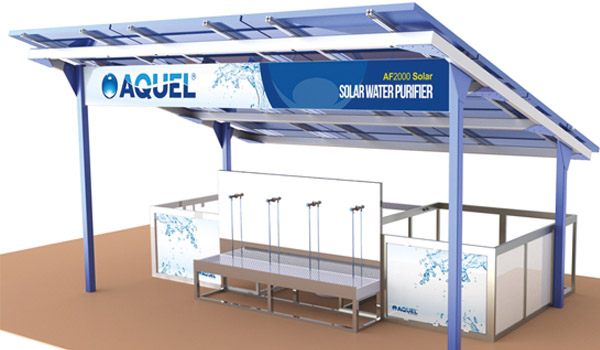

БРЕНД A UEL
UEL
Петр Бенеш
Основатель и руководитель "AQUEL Bohemia"
Иметь ясную цель - это всегда залог успеха. Это миссия каждого лидера, чтобы за ним шли остальные с абсолютной верой в исполнение поставленных задач и в получение запланированных результатов. Без целей, четкой дороги, Вы топчитесь на месте в ожидании чуда и в итоге все разваливается, как карточный домик.
Очевидно, что рынок требует обновления, повышения профессионализма, имиджа, безопасности и качества продукта, профессионального консультирования и правильного подхода к клиенту. Люди хотят честный и деловой подход.
Позвольте рассказать Вам, какой путь мы прошли за 17 лет!
- 2000 год
- Основание AQUEL
- Первая презентация оборудования
- 2001 год
- Основание AQUEL Slovakia
- Спонсор фонда Дагмар и Вацлава Гавела
- 2002 год
- Основание AQUEL Poland
- Основание AQUEL Atlas (Марокко)
- Основание AQUEL Estonia
- Основание AQUEL Hungary
- 2003 год
- Начало работы в Дубае
- Главный спонсор Детского Ранчо Глучин
- 2004 год
- Первые служебные машины
- Спонсор AUTOR Nova Cup
- 2005 год
- Основание AQUEL Germany
- Запуск автопрограммы AQUEL
- Первый журнал AQUEL
- 2006 год
- Основание AQUEL Rus
- Рождение AQUEL Лаборатории
- 2007 год
- Начало работы AQUEL Investment
- Спонсор Лиги против рака
- Основание AQUEL Bulgaria
- Сертификация ISO 9001
- 2008 год
- Основание AQUEL Ukraine
- Новая автопрограмма AQUEL - Mercedes C
- 2010 год
- Открытие выставки AQUEL
- 2011 год
- Основание AQUEL Казахстан
- Новый офис AQUEL Poland
- Запуск AQUEL Credit в Словакии
- 2013 год
- Основание AQUEL Африка
- 2015 год
- Открыто 74 региональных офиса
AQUEL в Африке
Проект очистки сильнозагрязненной воды
Компания AQUEL Bohemia разработала компактный фильтр-модуль для очистки сильнозагразненной воды в Африке, мощностью от 230 до 800 литров питьевой воды в час. Устройство работает с использованием солнечных панелей и технологии фильтрации, которая не требует внешнего электрического источника.
В ноябре AQUEL Bohemia завершила пилотный проект такого модуля и в конце января 2013 года провела первую установку в одной из деревень, в пятнадцати километрах от г. Бамако, столицы Мали. Общая стоимость пилоного проекта, включая исследования и тестирования, составила более двух миллионов крон, и компания реализовала это за счет собственных средств. Планы компании в течениии блжайших трех лет установить эти модули в сотнях других деревень в Западноафриканской республики.
Завершение пилотного проекта
Проблема критической нехватки питьевой воды, от чего давно страдают люди в беднейшей Африканской стране, и мы, как производители и дистрибьюторы систем очистки воды, ни в коем случае не могли остаться равнодушными. Уже в 2010 и 2011 годах, мы в различных регионах Африки испытывали портативные системы фильтрации, которые производят безопасную питьевую воду из любых бактериологически загрязненных источников. Таким образом, по приглашению Правительства Мали, мы разработали компактные системы, которые очищают непригодную для питья воду из собственных скважин и резервуаров. Вода под давлением закачивается через систему фильтрации в специальные контейнеры, погруженные в землю, с выходом для получения питьевой воды. Это будет доступно для любого жителя деревни, где будет установлен такой модуль, и они всегда будут обеспечены чистой питьевой водой.
Как это работает?
Система фильтрации AQUEL черпает воду из колодцев, рек, ручьев или различных скважин и пропускает ее через фильтры, откуда она поступает в огромные накопительные резервуары. Из воды полностью удаляется бактериологическое загрязнение, а эффективность очистки достигает 99,4%. Затем, благодаря нашей минерализации, в воду добавляется кальций и магний. Система погружена в землю на глубину до 1,5 метра и термически изолирована, тем самым, гарантирую, что температура выходной воды составляет около 20 градусов по Цельсию. Эта питьевая вода под давлением подается на специальные краны.
В планах компании устанавливать такие модули по 30 и более штук ежемесячно для обеспечения чистой питьевой водой более 1000 деревень. Если этот проект окажется успешен, мы будем рекомендовать такой подход к решению проблемы нехватки чистой питьевой воды и в другие страны, нуждающиеся в питьевой воде.